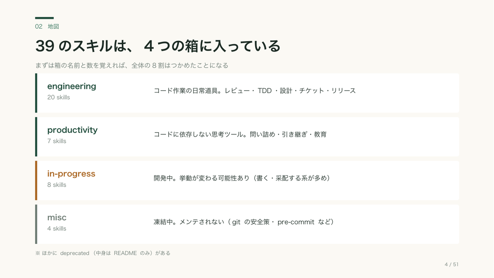
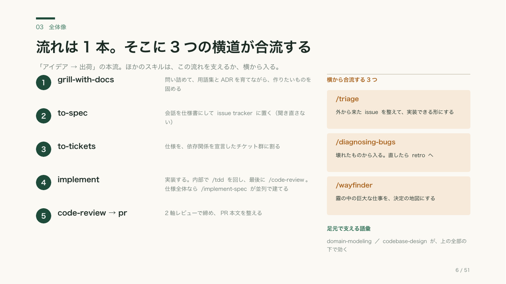
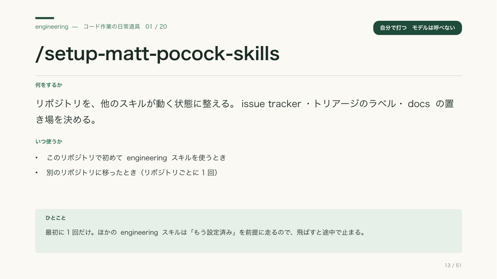
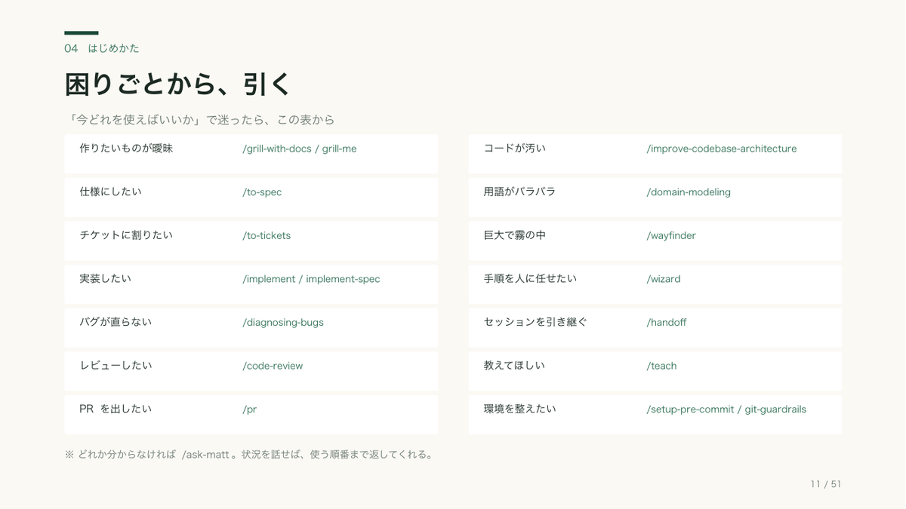

mattpocock/skills をはじめて使う人向けのガイドです。 全体像（2つの軸と1本の流れ）→ はじめかた → 39スキルの個別紹介、の3部構成。 「自分に合うのはどれか」が分かって、すぐ打てる形にしました。全51枚。
表示されないときは PDFを直接ひらいてください。




39個を並べる前に、「user-invoked（自分で打つ）」と「model-invoked（自動でも呼ばれる）」の1軸だけ覚えれば、設計がほぼ分かるように構成しています。
打てる形のコマンドと、順番。先に問い詰め、次に実装、最後に振り返りの3手から始めるのが早いです。
どのページも「何をするか／いつ使うか／ひとこと」。右肩のバッジで、自分で打つ必要があるかが一目で分かります。